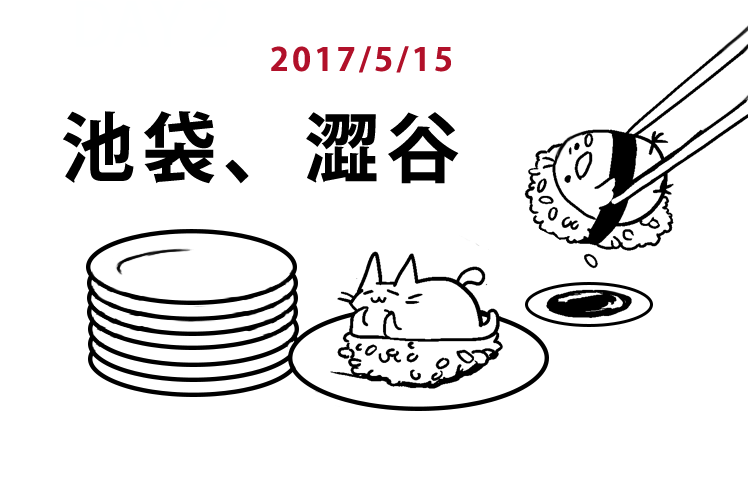
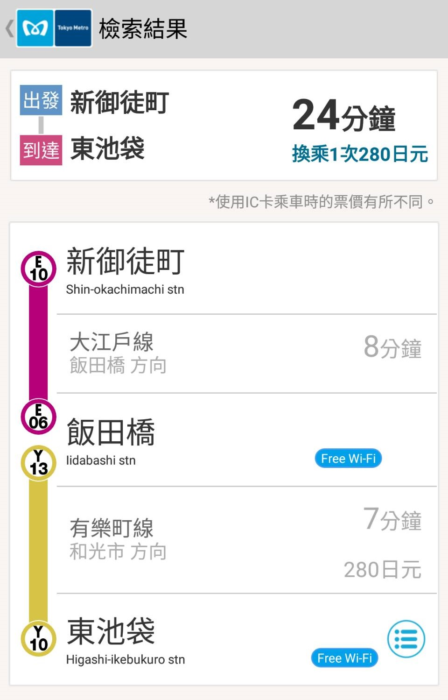
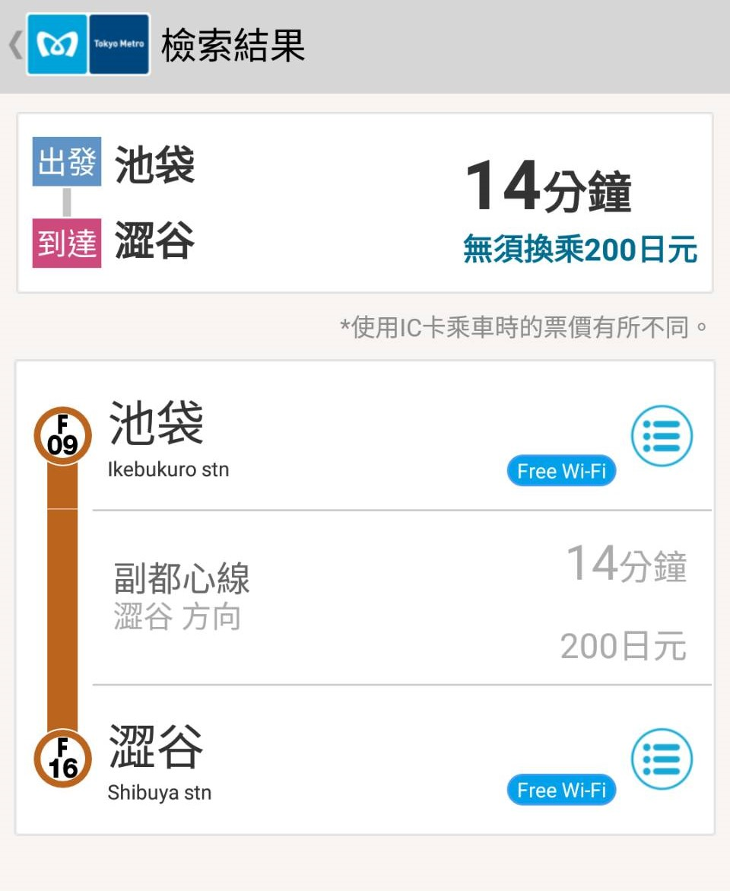
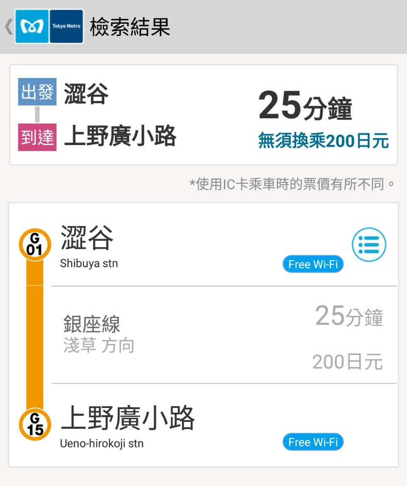

DAY0
行前準備
DAY1
飛東京成田
DAY2
池袋、澀谷
DAY3
大神宮、秋葉原
DAY4
淺草、谷根千
DAY5
六本木
DAY6
回家啦!

07:40
起床梳妝
09:20
離開飯店
從飯店走到
新御徒町車站
(約5分鐘)
MAP
新御徒町 → 東池袋 (280円，約24分鐘) 
10:00
東池袋
步行10分鐘 到
陽光水族館
陽光水族館門票2000 円
東京都豊島区東池袋3-1-1
MAP
??:??
SunDrug藥妝
錢包瘦了
東京都豐島區東池袋1-12-11
MAP
15:00
HARBS蛋糕
1500円
東京都豊島区西池袋1-11-1
ルミネ池袋店 1F
MAP
??:??
池袋 →
澀谷
(約14分鐘 200円) 
魚米（うおべい）渋谷道玄坂店
東京都渋谷区道玄坂2-29-11
MAP
官網
別人的食記
22:00
澀谷 →
上野廣小路
(約25分鐘 200円) 
DAY3